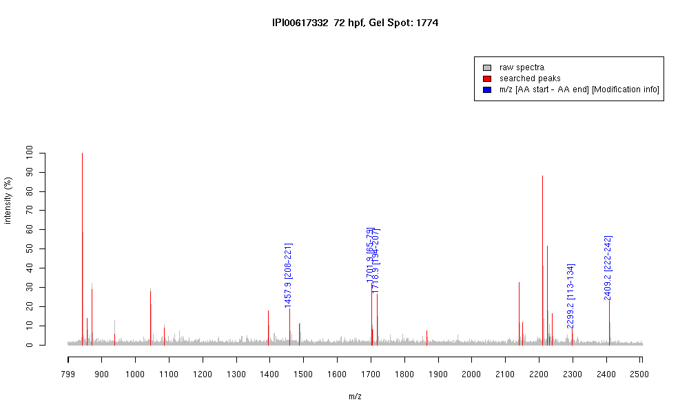

| Name | "PREDICTED: similar to tubulin, alpha 1isoform 2" |
|---|---|
| MW | 47619.3 |
| PI | 4.86 |
| Mascot Protein Score | 68 |
| Masses (matched / unmatched) | 5 / 23 |

| Peptide | MZ (calc) | MZ (observed) | Error (DA) | Error (PPM) | Start | Stop | Modifications |
|---|---|---|---|---|---|---|---|
| LIGQIVSSITASLR | 1457.8685 | 1457.8629 | -0.0056 | -4 | 208 | 221 | |
| AVFVDLEPTVIDEVR | 1701.9058 | 1701.9043 | -0.0015 | -1 | 65 | 79 | |
| NLDIERPTYTNLNR | 1718.8821 | 1718.8813 | -0.0008 | 0 | 194 | 207 | |
| EIIDLVFGGGTGSGFTSLLMER | 2299.1638 | 2299.1646 | 0.0008 | 0 | 113 | 134 | |
| FDGALNVDLTEFQTNLVPYPR | 2409.2085 | 2409.2063 | -0.0022 | -1 | 222 | 242 |